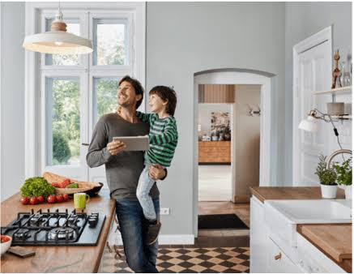

Australian Household Appliance Energy Guide
In Australia, household appliances account for approximately 30% of total domestic energy usage. Choosing energy-efficient models helps reduce electricity bills and lower greenhouse gas emissions.

Australian Market Energy Overview
Under the Energy Rating System in Australia, appliances such as refrigerators, air conditioners, and TVs carry star rating labels. The more stars an appliance has, the more energy-efficient it is compared to other models of the same size.
Frequently Asked Questions (FAQ)
The Energy Rating Label helps Australian consumers compare the energy efficiency and running costs of appliances before making a purchase.
You can reduce standby power (phantom load) by turning appliances completely off at the power point when they are not in use.
Heating and cooling systems, water heaters, and large refrigerators generally account for the largest share of household electricity usage.